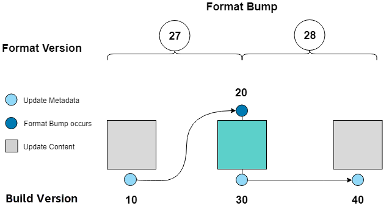

mixer
The Clear Linux* OS team uses mixer to generate official update content and releases. The update content generated by mixer is then consumed by swupd on a downstream client. The same mixer tool is available to those who wish to create customized update content and releases.
Description
mixer uses the following sources as inputs to generate update content:
Upstream Clear Linux OS bundles with their corresponding RPM packages
Locally-defined bundles with their corresponding local RPM packages
Locally-defined bundles with upstream RPM packages
Locally-defined bundles with non-RPM content
Using the mixer tool, you select which content from these sources that becomes part of your update. Your selection of sources produces a unique combination of functionality for your custom update content, known as a mix.
The update content that mixer generates consists of various pieces of OS content, update metadata, as well as a complete image. The OS content includes all files in an update, as well as zero- and delta-packs for improved update performance. The update metadata, stored as manifests, describes all of the bundle information for the update. Update content produced by mixer is then published to a web server and consumed by clients via swupd. Refer to swupd for additional information regarding updates and update content.
How it works
Learn the mixer tool set up and workflow.
Prerequisites
mixer bundle
Add the mixer tool by installing the mixer bundle. Refer to swupd for more information on installing bundles.
If you’re working behind a corporate proxy, configure proxy settings using the General proxy settings for many applications steps.
Location to host the update content and images
In order for swupd to make use of your mix, the update content for your mix must be hosted on a web server. Your mix will be configured with an update location URL, which swupd will use to pull down updates.
Refer to Set up a nginx web server for mixer for an simple example of setting up an update location.
Mix setup
Follow these steps to create and initialize the mixer workspace. Complete the setup before you create a mix.
Create workspace.
The mixer tool uses a simple workspace to contain all input and output in a basic directory structure. The workspace is simply an empty folder from which you execute the mixer commands. Each mix uses its own separate workspace.
Initialize the workspace and mix.
Before you create a mix, you must explicitly initialize the mixer workspace. During initialization, the mixer workspace is configured and the base for your mix is defined. By default, your mix is based on the latest upstream version and starts with the minimum set of bundles. Your first custom mix version number starts at 10. Alternatively, you can select other versions or bundle sets from which to start.
Initialization creates the directory structure within the workspace and adds the
builder.conffile, which is used to configure the mixer tool.View the mixer.init man page for more information on mixer initialization.
View the list of suitable releases from which to mix.
Edit builder.conf.
builder.conftells the mixer tool how to configure the mix. For example, it allows you to configure where mixer output is located and where swupd update content will be located.At minimum, set the URL of your update server so your custom OS knows where to get update content.
Refer to the builder.conf section for more information.
Create a mix
A mix is created with the following steps:
Add custom RPMs and set up local repo (optional).
If you are adding custom RPMs to your mix, you must add the RPMs to your mix workspace and set up a corresponding local repository.
Go to the autospec guide to learn to build RPMs from scratch. If the RPMs are not built on Clear Linux OS, make sure your configuration and toolchain builds them correctly for Clear Linux OS. Otherwise there is no guarantee they will be compatible.
Refer to the autospec guide for more information on using autospec to build RPMs.
Update and build bundles.
Add, edit, or remove bundles that will be part of your content and build them. mixer automatically updates the
mixbundlesfile when you update the bundles in your mix.View the mixer.bundle man page for more information on configuring bundles in a mix.
View the mixer.build man page for more information on building bundles.
View the Bundles section for more information on how mixer manages bundles.
Create the update content.
mixer creates update content with this step. Zero-packs are created automatically, and delta-packs can be optionally created at the same time (for all builds after version 0).
A zero-pack is the full set of content needed to go from mix version 0 (nothing) to the mix version for which you just built content.
A delta-pack provides the content delta between a PAST_VERSION to a MIX_VERSION that allows the transition from one mix version to another.
View swupd for more information on update content.
Create image.
mixer creates a bootable image from your updated content using the clr-installer tool. In this step you can specify which bundles you want preinstalled in the image. Users can later install other bundles available in your mix.
Make update available.
Deploy update content and images to your update server.
View the Example 5: Deploy updates to target for a simple deployment scenario.
Maintain or modify mix
Update or modify your content to a new version by following the steps to create a mix. Increment the mix version number for the next mix.
Examples
The following examples are designed to work together and in order. The examples use:
A stock installation of Clear Linux OS.
A web server that comes with Clear Linux OS to host the content updates.
A simple VM that updates against the locally produced content created in Example 2.
Complete all Prerequisites before using these examples.
Example 1: Mix set up
This example shows the basic steps for the first-time setup of mixer for a new mix.
Create a directory to use as a workspace for mixer:
mkdir ~/mixerIn your mixer workspace, generate an initial mix based on the latest upstream Clear Linux OS version, with minimum bundles. In the initialization output, be aware that your initial mix version is set to 10 and that the minimum bundles have been added.
cd ~/mixer mixer init
Note
If you want to add all upstream bundles in your mix, initialize your mix as shown below.
mixer init --all-upstream
Look up your IP address:
networkctl statusCopy the IP “Address”, from above, for the next step.
Note
In this example, we put mixer and nginx on the same system. In a production environment, they would likely reside on different systems.
Edit
builder.conf. Paste the IP address from the previous step as the value after http:// for CONTENTURL and VERSIONURL. For example:CONTENTURL="http://192.168.25.52" VERSIONURL="http://192.168.25.52"
Example 2: Create a simple mix
This example shows how to create a simple custom mix using upstream content. We’ll create an image for a QEMU virtual machine that we can use later to test our mix.
We can use the default bundles that were added during initialization, but these include the native-kernel bundle that is intended to be used on a bare metal system instead of a VM. So we will modify the default bundle set to get a smaller kernel image, which will also be faster to load.
Note
The only bundles available to swupd for a given release are those that were added to the mix during build time. A mix doesn’t automatically inherit all upstream bundles.
Ensure that you have run mixer init, shown in Example 1.
Update bundles in mix:
mixer bundle remove kernel-native mixer bundle add kernel-kvm
Note
The mixer bundle commands operate on the bundle description files but not on the bundle contents. To remove bundle contents and their tracking completely, follow Example 6: Remove a bundle from client system, Advanced.
In this case, we will add the editors bundle from upstream, but we will remove the joe editor.
mixer bundle add editors mixer bundle edit editors
Use an editor and manually remove joe from the bundle definition.
$EDITOR ./local-bundles/editors
List the bundles in the mix again to confirm removal of joe.
mixer bundle list --tree
Build bundles:
sudo mixer build bundles
First, browse to web server from Example 1. The web page appears yet has no update content. Build the update content:
sudo mixer build update
After that is completed, on your web server, you can see the update content for mix version 10.
Example 3: Create an update for your mix
Next, let’s create a new version of the mix. We’ll add a new bundle.
Create a new version of your mix, for the live image to update to. Increment your mix version by 10:
mixer versions update
Add the upstream curl bundle to version 20 of the mix:
mixer bundle add curl
Build your next mix version that incorporates the new bundle.
sudo mixer build bundles sudo mixer build update
Optionally, you can build delta-packs, which help reduce client update time:
sudo mixer build delta-packs --from 10 --to 20
Refresh your web server to see the update content for mix version 20.
You can also look in ~/mixer/update/www/<mix version> to see the update content in your workspace.
Example 4: Build an image
This example shows how to build a bootable image containing the kernel-kvm, os-core, and the os-core-update bundles from Example 2: Create a simple mix. Complete that example before starting this one.
Underneath, mixer uses clr-installer to generate the image.
Change directory into your mix.
Configure image.
Create a YAML configuration file to specify aspects of your image such as image name, target media, bundles, etc. See Installer YAML Syntax for more information on clr-installer configuration YAML syntax.
For this example, we will download a sample YAML and modify it.
curl -O https://raw.githubusercontent.com/clearlinux/clr-installer/master/scripts/kvm.yaml
Make the following revisions to
kvm.yaml:Reduce overall image size and root partition size by 5GB.
Remove these bundles from the image:
editors,network-basic,openssh-server,sysadmin-basicAdd
version: 10to tell mixer to generate an image based on mix version 10
Note
When creating an image, it is not necessary to include all of the bundles that are in your entire mix. Once you have a working image, you can use swupd to add them as needed.
Your
kvm.yamlshould look like below:1#clear-linux-config 2 3# switch between aliases if you want to install to an actuall block device 4# i.e /dev/sda 5block-devices: [ 6 {name: "bdevice", file: "kvm.img"} 7] 8 9targetMedia: 10- name: ${bdevice} 11 size: "3.54G" 12 type: disk 13 children: 14 - name: ${bdevice}1 15 fstype: vfat 16 mountpoint: /boot 17 size: "512M" 18 type: part 19 - name: ${bdevice}2 20 fstype: swap 21 size: "32M" 22 type: part 23 - name: ${bdevice}3 24 fstype: ext4 25 mountpoint: / 26 size: "3G" 27 type: part 28 29bundles: [ 30 bootloader, 31 os-core, 32 os-core-update, 33 ] 34 35autoUpdate: false 36postArchive: false 37postReboot: false 38telemetry: false 39 40keyboard: us 41language: en_US.UTF-8 42kernel: kernel-kvm 43 44version: 10
Build the image.
sudo mixer build image --template $PWD/kvm.yaml
The output from this step will be
kvm.img, which is a live image.
Example 5: Deploy updates to target
The image created in Example 4 is directly bootable in QEMU. In this example, we’ll boot the image and verify it. Then we’ll update the image from mix version 10 to mix version 20.
Set up the QEMU environment.
Install the kvm-host bundle to your Clear Linux OS:
sudo swupd bundle-add kvm-host
Get the virtual EFI firmware, download the image launch script, and make it executable:
curl -O https://download.clearlinux.org/image/OVMF.fd curl -O https://download.clearlinux.org/image/start_qemu.sh chmod +x start_qemu.sh
Start your VM image (created in Example 4):
sudo ./start_qemu.sh kvm.img
Log in as root and set a password.
By default, the swupd client is designed to communicate with an HTTPS server. For development purposes, the swupd client can talk to an HTTP server if you add the flag
allow-insecure-http.To avoid adding a flag each time when invoking swupd, enter:
mkdir -p /etc/swupd cat > /etc/swupd/config << EOF [GLOBAL] allow_insecure_http=true EOF
Try out your mix.
Show the version and update URLs
swupd infoList the bundles installed in your mix:
swupd bundle-listList available bundles on your update server.
swupd bundle-list -a
Now we will add the editors bundle that we modified.
swupd bundle-add editors
Try to start the joe editor.
joe
It should not work because we removed it from the original editors bundle.
Next we will update from version 10 to 20 to capture the newly-available bundles.
swupd check-update swupd update swupd bundle-list -a
Now your mix should be at version 20 and curl is available. Try using curl. This will fail because it is not yet installed.
curl: command not found To install curl use: swupd bundle-add curl
Add the new bundle from your update server to your VM. Retry curl. It works!
swupd bundle-add curl curl -O https://download.clearlinux.org/image/start_qemu.sh
Shutdown your VM:
poweroff
Example 6: Remove a bundle from client system
Removing a bundle in a future release requires more steps than deleting the bundle description file, as shown in Example 2. After a bundle is built in the mix, you must assure all of the files that are part of the bundle are removed from the client where that bundle is installed. To do this, create a version of this bundle in which all of its content is marked for deletion.
In the following example, we show how to remove the contents of the editors bundle that we added to our mix in Example 2.
First update your mix version. This will set the mix to the next version.
mixer versions update
Note
Run this command every time that you want to build a new version.
Navigate to local-bundles:
cd local-bundles
Open the editors bundle with an editor and delete all lines that follow after the [MAINTAINERS] line.
Afterward, it should look like this:
# [TITLE]: editors # [DESCRIPTION]: Run popular terminal text editors. # [STATUS]: Active # [CAPABILITIES]: # [TAGS]: Tools and Utilities, Editor # [MAINTAINER]: Developer <developer@intel.com>
Save and exit.
Next, run a build to capture recently edited bundles and update your mix.
sudo mixer build all
Note
mixer build all runs both mixer build bundles and mixer build update in one step.
At this point the new mix, version 30, is complete. All the content of the editors bundles is marked as deleted. If any clients of this mix upgraded to mix build version 30, the content of the editors bundle would be removed. Note that the bundle still exists and is being tracked by swupd, but it contains no files.
Example 7: Execute a format bump
As a maintainer of your mix, you must execute a format bump if you wish to:
Track upstream’s format bump on your downstream derivative
Delete any custom bundles that were added
Follow the appropriate use case below depending on your needs.
Basic
If you maintain your own downstream derivative and you want to track upstream, you need to do a format bump when one occurs on upstream. This method helps you track the latest changes on upstream; however, it does not change any local content that was added or deleted. For example, if you deprecated bundles, this method will not remove the bundle tracking. Refer to Advanced for help on managing your local mix and removing bundle tracking.
In this example, we show a mix version that was initialized to upstream version 29740 (format 27). You need to update your mix to upstream version 30700 (format 28). To do so, you will go through a format bump.
Change to your mix location and verify the current version of the mix and its format.
mixer versionsUpdate to upstream version, which has a newer format.
mixer versions update --upstream-version 30700
The output will look like this:
Old mix: 10 Old upstream: 29740 (format: 27) New mix: 20 New upstream: 30700 (format: 28) [...]
Read the output carefully:
The Old mix shows the current version (10) of your mix.
The Old upstream shows the version and format (27) on which it’s based.
The New mix shows the new version (20) of your mix.
The New upstream shows the version and format (28) on which it’s based.
Given that the format in the output differs, you need to run a format bump:
sudo mixer build upstream-format --new-format 28
Note
You specify the --new-format to indicate the format (28) to which you transition.
Your mix is now synchronized with the new format (28); however, you must still advance to the desired or latest version.
mixer versions update --upstream-version 30700
Advanced
To properly remove a bundle from being tracked by swupd, do a manual format bump. This process can also be used to perform customizations during the update, such as:
Adjustment in the command parameters
Change the content of the chroot
Follow the afb.sh reference script to learn how to do a manual format bump. The afb.sh reference script shows an example of how to:
Create a mix
Add a bundle
Deprecate a bundle
Do a format bump to remove the deprecated bundle
References
Reference the mixer man page for details regarding mixer commands and options.
builder.conf
mixer initialization creates a builder.conf that stores the basic
configuration for the mixer tool. The items of primary interest are CONTENTURL
and VERSIONURL, which will be used by systems updating against your custom
content.
#builder.conf
#VERSION 1.2
[Builder]
CERT = "/home/clr/mix/Swupd_Root.pem"
SERVER_STATE_DIR = "/home/clr/mix/update"
VERSIONS_PATH = "/home/clr/mix"
YUM_CONF = "/home/clr/mix/.yum-mix.conf"
[Swupd]
BUNDLE = "os-core-update"
CONTENTURL = "<URL where the content will be hosted>"
VERSIONURL = "<URL where the version of the mix will be hosted>"
COMPRESSION = ["external-xz"]
UPSTREAM_BUNDLES_URL = "https://github.com/clearlinux/clr-bundles/archive/"
[Server]
DEBUG_INFO_BANNED = "true"
DEBUG_INFO_LIB = "/usr/lib/debug"
DEBUG_INFO_SRC = "/usr/src/debug"
[Mixer]
LOCAL_BUNDLE_DIR = "/home/clr/mix/local-bundles"
LOCAL_REPO_DIR = "/home/clr/mix/local-yum"
LOCAL_RPM_DIR = "/home/clr/mix/local-rpms"
OS_RELEASE_PATH = ""
Additional explanation of variables in builder.conf is provided in
Table 1.
Variable |
Description |
|---|---|
CERT |
Sets the path where mixer stores the certificate file used to sign
content for verification. mixer automatically generates the
certificate if you do not provide the path to an existing one, and
signs the chroot-builder uses the certificate file to sign the root :file:`
Manifest.MoM` file to provide security for content verification.
swupd uses this certificate to verify the For now, we strongly recommend that you do not modify this variable, as swupd expects a certificate with a very specific configuration to sign and verify properly. |
CONTENTURL and VERSIONURL |
Set these variables to the IP address of the web server hosting the update content. VERSIONURL is the IP address where the swupd client looks to determine if a new version is available. CONTENTURL is the location from which swupd pulls content updates. If the web server is on the same machine as the SERVER_STATE_DIR directory, you can create a symlink to the directory in your web server’s document root to easily host the content. These URLs are embedded in the images created by mixer. |
LOCAL_BUNDLE_DIR |
Sets the path where mixer stores the local bundle definition files. The bundle definition files include any new, original bundles you create, along with any edited versions of upstream bundles. |
SERVER_STATE_DIR |
Sets the path to which mixer outputs content. By default, mixer automatically sets the path. |
VERSIONS_PATH |
Sets the path for the mix version and upstream version’s two state
files: |
YUM_CONF |
Sets the path where mixer automatically generates the
|
Variable |
Explanation |
CERT |
Sets the path where mixer stores the certificate file
used to sign content for verification. mixer
automatically generates the certificate if you do not
provide the path to an existing one, and signs the
chroot-builder uses the certificate file to sign
the root swupd uses this certificate to verify the
For now, we strongly recommend that you do not modify this variable, as swupd expects a certificate with a very specific configuration to sign and verify properly. |
CONTENTURL and VERSIONURL |
Set these variables to the IP address of the web server hosting the update content. VERSIONURL is the IP address where the swupd client looks to determine if a new version is available. CONTENTURL is the location from which swupd pulls content updates. If the web server is on the same machine as the SERVER_STATE_DIR directory, you can create a symlink to the directory in your web server’s document root to easily host the content. These URLs are embedded in the images created by mixer. |
LOCAL_BUNDLE_DIR |
Sets the path where mixer stores the local bundle definition files. The bundle definition files include any new, original bundles you create, along with any edited versions of upstream bundles. |
SERVER_STATE_DIR |
Sets the path to which mixer outputs content. By default, mixer automatically sets the path. |
VERSIONS_PATH |
Sets the path for the mix version and upstream version’s
two state files: |
YUM_CONF |
Sets the path where mixer automatically generates the
The yum configuration file points the chroot-builder to where the RPMs are stored. |
Table 1: Variables in builder.conf |
|
Format version
Compatible versions of an OS are tracked with an OS compatibility epoch.
Versions of an OS within an epoch are fully compatible and can update to any
other version within that epoch. The compatibility epoch is set as the
Format variable in the mixer.state file. Variables in the
mixer.state are used by mixer between executions and should not be
manually changed.
Format bump
Mixer needs to produce content that is consumable by swupd. For swupd to consume the content, it needs a consistent protocol that describes the requirements of the Manifest.
If the Format increments to a new epoch (a “format bump”), the underlying swupd protocol has changed such that updating from one build version in an old format to a new build version in a new format is only allowed if one performs a corresponding format bump.
Format bumps are “checkpoints” (see Figure 1). The first release (20) is built on the previous format with a swupd that is capable of interpreting the next format. The second release (30) has the same content, but it’s built in the new format.
Suppose you have build version 10, but you need the tools in build version 40. Whereas version 10 belongs to Format 27, version 40 belongs to Format 28. The swupd client needs to follow formats sequentially. First, you must update to version 20, which effectively enables a format bump to version 30. Doing a format bump bridges the gap so your mix can progress to build version 40.

Figure 1: Format bump
Note
if you update to build 20 and then check which format of the distro is used, the new build version will show 30, and the new format will show 28.
Bundles
mixer stores information about the bundles included in a mix in a flat file
called mixbundles, which is located in the path set by the
VERSIONS_PATH variable in builder.conf. mixbundles is
automatically created when the mix is initiated. mixer will refresh the file
each time you change the bundles in the mix.
Bundles belong in one of two categories: upstream or local. Upstream bundles are those provided by Clear Linux OS. Local bundles are either modified upstream bundles or new local bundles.
Upstream bundles
mixer automatically downloads and caches upstream bundle definition files. These definition files are stored in the upstream-bundles directory in the workspace. Do not modify the files in this directory. This directory is simply a mirror for mixer to use. mixer will automatically delete the contents of this directory before repopulating it on-the-fly if a new version must be downloaded.
The mixer tool automatically caches the bundles for the Clear Linux OS version
configured in the upstreamversion file. mixer also
cleans up old versions once they are no longer needed.
Local bundles
Local bundles are bundles that you create, or are edited versions of upstream
bundles. Local bundle definition files are stored in the local-bundles
directory in the workspace. The LOCAL_BUNDLE_DIR variable sets the path of this directory in the builder.conf file.
mixer always checks for local bundles first and the upstream bundles second. So bundles in the local-bundles directory will always take precedence over any upstream bundles that have the same name. This precedence enables you to copy upstream bundles locally, and edit into a local variation.
Bundle definition files
A bundle definition file consists of a header, followed by a list
of packages and directives. The header holds important meta-data, like
the TITLE, DESCRIPTION, and STATUS. Other meta-data include TAGS, which
define a bundle’s function in the ecosystem, and MAINTAINER, which gives
contact information.
Following the header are the directives, shown in Table 2.
Directive |
Description |
|---|---|
|
Add <required-bundle-name> with this bundle |
|
Add <optional-bundle-name> unless the option |
|
Add the non-packaged content to the bundle. Refer to swupd 3rd-party for usage of this directive. |
Following is cluster-tools, an upstream bundle definition file. The directives are highlighted, and the rest are packages.
[TITLE]: cluster-tools
[DESCRIPTION]: Utilities to manage computer clusters
[STATUS]: Active
[CAPABILITIES]: HPC
[TAGS]: Tools and Utilities
[MAINTAINER]: Juro Bystricky <juro.bystricky@intel.com>
include(curl)
include(libglib)
include(libX11client)
also-add(openmpi)
also-add(modules)
munge
pmix
pdsh
slurm
Bundle configuration
mixer provides commands to configure the bundles for a mix, such as to add a bundle to a mix, to create a new bundle for a mix, or to remove a bundle from a mix. View the mixer.bundle man page for a full list of commands and more information on configuring bundles in a mix.
Editing an existing local bundle is as simple as opening the bundle definition file in your favorite editor, making the desired edits, and saving your changes.
Note
Removing bundles from a mix: By default, removing a bundle will only remove the bundle from the mix. The local bundle definition file will still remain. To completely remove a bundle, including its local bundle definition file, use the --local flag.
If you remove the bundle definition file for a local, edited version of an upstream bundle in a mix, the mix reverts to reference the original upstream version of the bundle.
Set up a nginx web server for mixer
A web server is needed to host your update content. In this example, the nginx web server is used.
Install the nginx bundle.
sudo swupd bundle-add nginx
Create a symbolic link to the mixer update content directory.
sudo mkdir -p /var/www sudo ln -sf $HOME/mixer/update/www /var/www/mixer
Set up nginx configuration files.
sudo mkdir -p /etc/nginx/conf.d sudo cp -f /usr/share/nginx/conf/nginx.conf.example /etc/nginx/nginx.conf
Grant
$USERpermission to run the web server.sudo tee -a /etc/nginx/nginx.conf << EOF user $USER; EOF
Configure the mixer update server.
sudo tee -a /etc/nginx/conf.d/mixer-server.conf << EOF server { server_name localhost; location / { root /var/www/mixer; autoindex on; } } EOF
Restart the daemon, enable nginx on boot, and start the service.
sudo systemctl daemon-reload sudo systemctl enable nginx --now
Verify the web server is running at http://<IP-address-of-web-server>. If there’s no mix content yet, the expected response from nginx will be a
404 Not Found.